# A tibble: 453 × 3
date soi recruitment
<dbl> <dbl> <dbl>
1 1950 0.377 68.6
2 1950. 0.246 68.6
3 1950. 0.311 68.6
4 1950. 0.104 68.6
5 1950. -0.016 68.6
6 1950. 0.235 68.6
7 1950. 0.137 59.2
8 1951. 0.191 48.7
9 1951. -0.016 47.5
10 1951. 0.29 50.9
# … with 443 more rowsCCFs, Differencing, & AR(1) models
Lecture 08
Dr. Colin Rundel
Lagged Predictors and CCFs
Southern Oscillation Index & Recruitment
The Southern Oscillation Index (SOI) is an indicator of the development and intensity of El Niño (negative SOI) or La Niña (positive SOI) events in the Pacific Ocean. These data also included the estimate of “recruitment”, which indicate fish population sizes in the southern hemisphere.
Time series
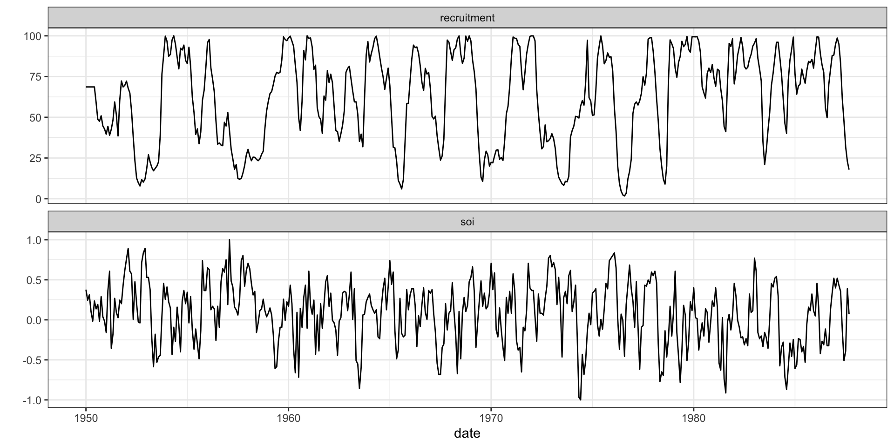Relationship?
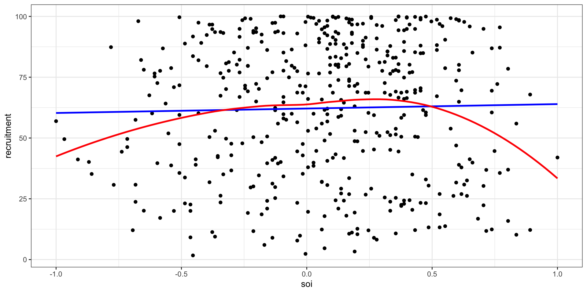soi - ACF & PACF
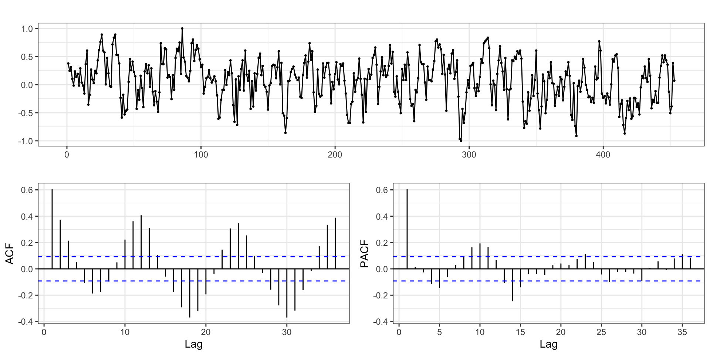recruitment - ACF & PACF
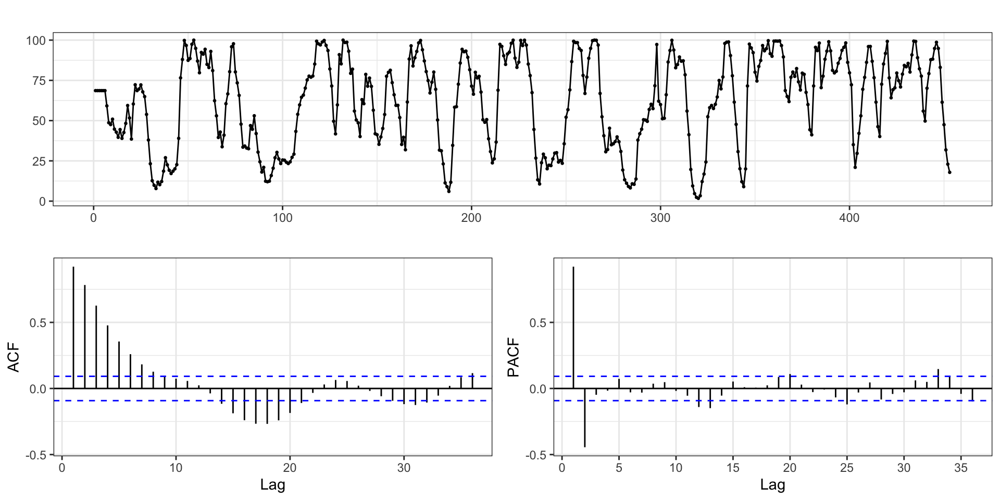Cross correlation function
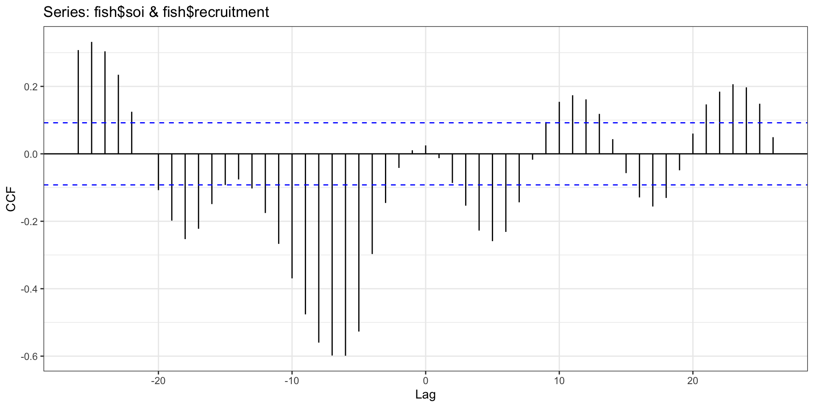Cross correlation function - Scatter plots
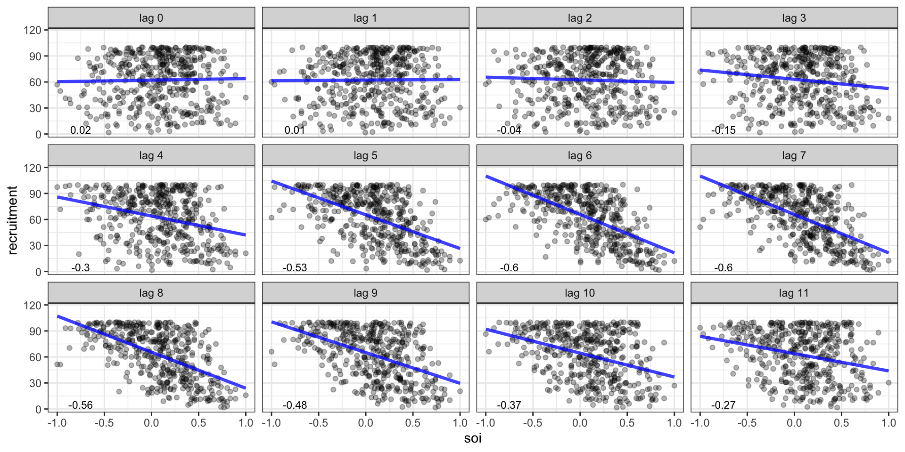The CCF gave us negative lags, why are we not considering them here?
Model
Call:
lm(formula = recruitment ~ lag(soi, 5) + lag(soi, 6) + lag(soi,
7) + lag(soi, 8), data = fish)
Residuals:
Min 1Q Median 3Q Max
-72.409 -13.527 0.191 12.851 46.040
Coefficients:
Estimate Std. Error t value Pr(>|t|)
(Intercept) 67.9438 0.9306 73.007 < 2e-16 ***
lag(soi, 5) -19.1502 2.9508 -6.490 2.32e-10 ***
lag(soi, 6) -15.6894 3.4334 -4.570 6.36e-06 ***
lag(soi, 7) -13.4041 3.4332 -3.904 0.000109 ***
lag(soi, 8) -23.1480 2.9530 -7.839 3.46e-14 ***
---
Signif. codes: 0 '***' 0.001 '**' 0.01 '*' 0.05 '.' 0.1 ' ' 1
Residual standard error: 18.93 on 440 degrees of freedom
(8 observations deleted due to missingness)
Multiple R-squared: 0.5539, Adjusted R-squared: 0.5498
F-statistic: 136.6 on 4 and 440 DF, p-value: < 2.2e-16Prediction
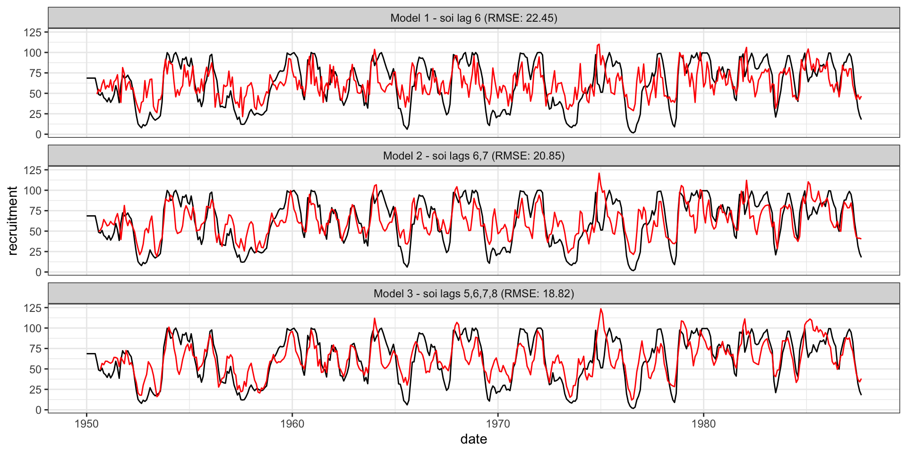Residual ACF - Model 3
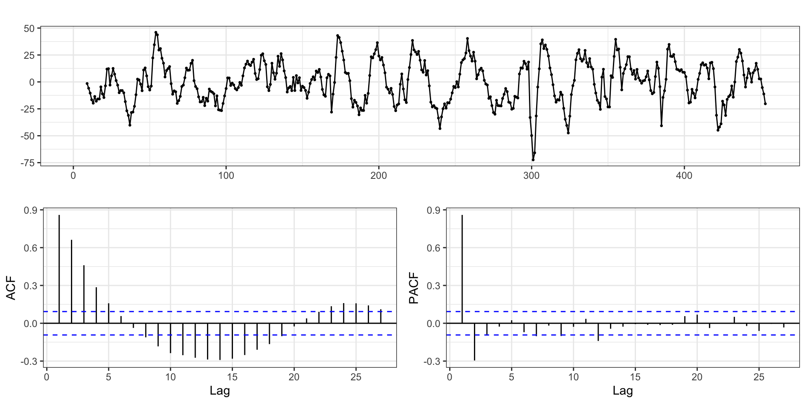Autoregessive model 4
model4 = lm(
recruitment~lag(recruitment,1) + lag(recruitment,2) +
lag(soi,5)+lag(soi,6)+lag(soi,7)+lag(soi,8),
data=fish
)
summary(model4)
Call:
lm(formula = recruitment ~ lag(recruitment, 1) + lag(recruitment,
2) + lag(soi, 5) + lag(soi, 6) + lag(soi, 7) + lag(soi, 8),
data = fish)
Residuals:
Min 1Q Median 3Q Max
-51.996 -2.892 0.103 3.117 28.579
Coefficients:
Estimate Std. Error t value Pr(>|t|)
(Intercept) 10.25007 1.17081 8.755 < 2e-16 ***
lag(recruitment, 1) 1.25301 0.04312 29.061 < 2e-16 ***
lag(recruitment, 2) -0.39961 0.03998 -9.995 < 2e-16 ***
lag(soi, 5) -20.76309 1.09906 -18.892 < 2e-16 ***
lag(soi, 6) 9.71918 1.56265 6.220 1.16e-09 ***
lag(soi, 7) -1.01131 1.31912 -0.767 0.4437
lag(soi, 8) -2.29814 1.20730 -1.904 0.0576 .
---
Signif. codes: 0 '***' 0.001 '**' 0.01 '*' 0.05 '.' 0.1 ' ' 1
Residual standard error: 7.042 on 438 degrees of freedom
(8 observations deleted due to missingness)
Multiple R-squared: 0.9385, Adjusted R-squared: 0.9377
F-statistic: 1115 on 6 and 438 DF, p-value: < 2.2e-16Autoregessive model 5
model5 = lm(
recruitment~lag(recruitment,1) + lag(recruitment,2) +
lag(soi,5) + lag(soi,6),
data=fish
)
summary(model5)
Call:
lm(formula = recruitment ~ lag(recruitment, 1) + lag(recruitment,
2) + lag(soi, 5) + lag(soi, 6), data = fish)
Residuals:
Min 1Q Median 3Q Max
-53.786 -2.999 -0.035 3.031 27.669
Coefficients:
Estimate Std. Error t value Pr(>|t|)
(Intercept) 8.78498 1.00171 8.770 < 2e-16 ***
lag(recruitment, 1) 1.24575 0.04314 28.879 < 2e-16 ***
lag(recruitment, 2) -0.37193 0.03846 -9.670 < 2e-16 ***
lag(soi, 5) -20.83776 1.10208 -18.908 < 2e-16 ***
lag(soi, 6) 8.55600 1.43146 5.977 4.68e-09 ***
---
Signif. codes: 0 '***' 0.001 '**' 0.01 '*' 0.05 '.' 0.1 ' ' 1
Residual standard error: 7.069 on 442 degrees of freedom
(6 observations deleted due to missingness)
Multiple R-squared: 0.9375, Adjusted R-squared: 0.937
F-statistic: 1658 on 4 and 442 DF, p-value: < 2.2e-16Prediction
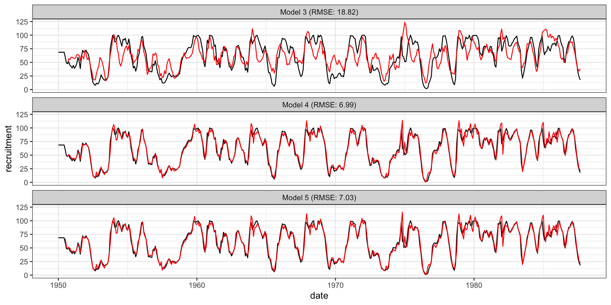Residual ACF - Model 5
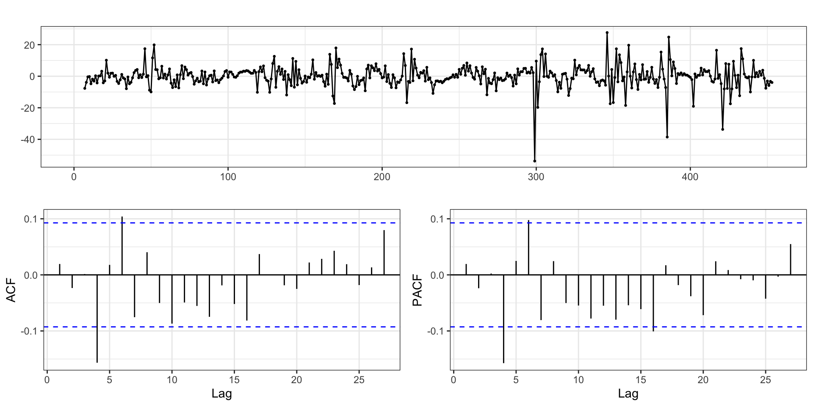Non-stationarity
Non-stationary models
All happy families are alike; each unhappy family is unhappy in its own way.
- Tolstoy, Anna Karenina
This applies to time series models as well, just replace happy family with stationary model.
A simple example of a non-stationary time series is a trend stationary model
\[ y_t = \mu(t) + w_t \]
where \(\mu(t)\) denotes a time dependent trend and \(w_t\) is a white noise (stationary) process.
Linear trend model
Lets imagine a simple model where \(y_t = \delta + \beta t + x_t\) where \(\delta\) and \(\beta\) are constants and \(x_t\) is a stationary process.

Differencing
An simple approach to remove trend is to difference your response variable, specifically examine \(d_t = y_t - y_{t-1}\) instead of \(y_t\).
Detrending vs Differencing
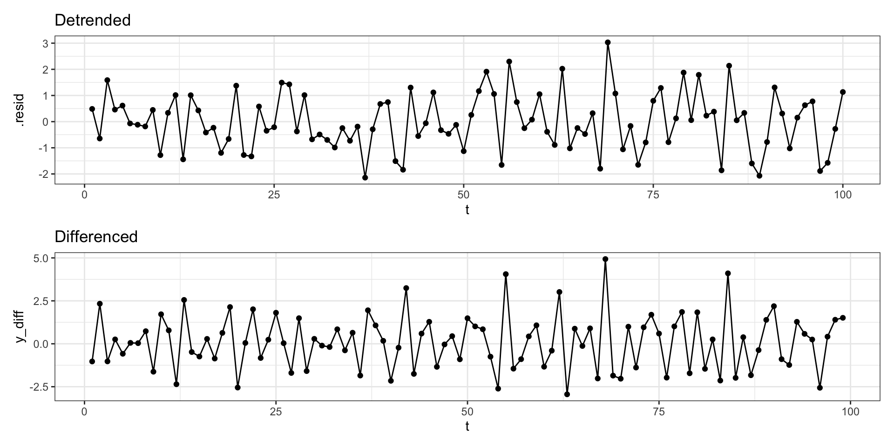Quadratic trend model
Lets imagine another simple model where \(y_t = \delta + \beta t + \gamma t^2 + x_t\) where \(\delta\), \(\beta\), and \(\gamma\) are constants and \(x_t\) is a stationary process.
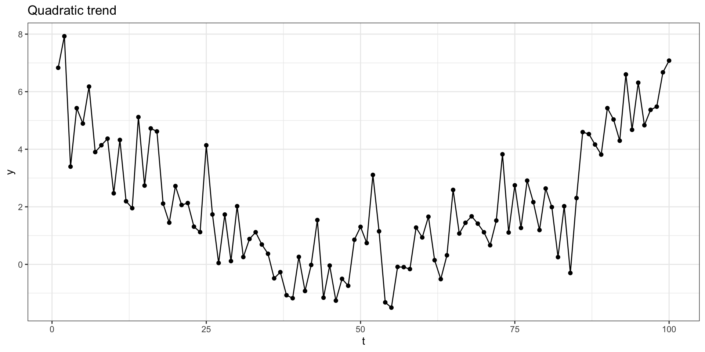Detrending
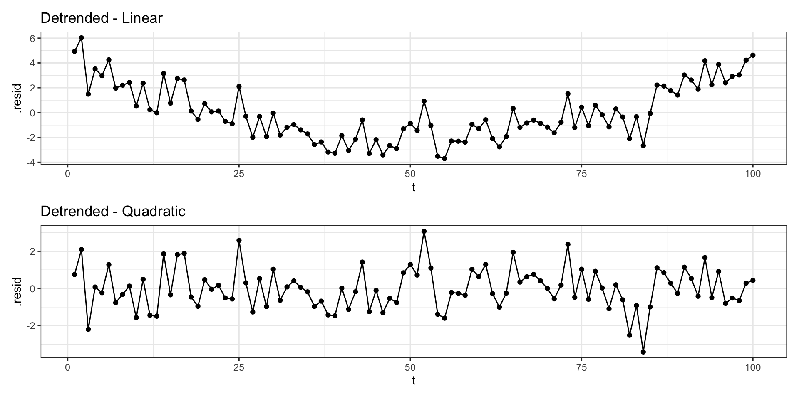2nd order differencing
Let \(d_t = y_t - y_{t-1}\) be a first order difference then \(d_t - d_{t-1}\) is a 2nd order difference.
Differencing
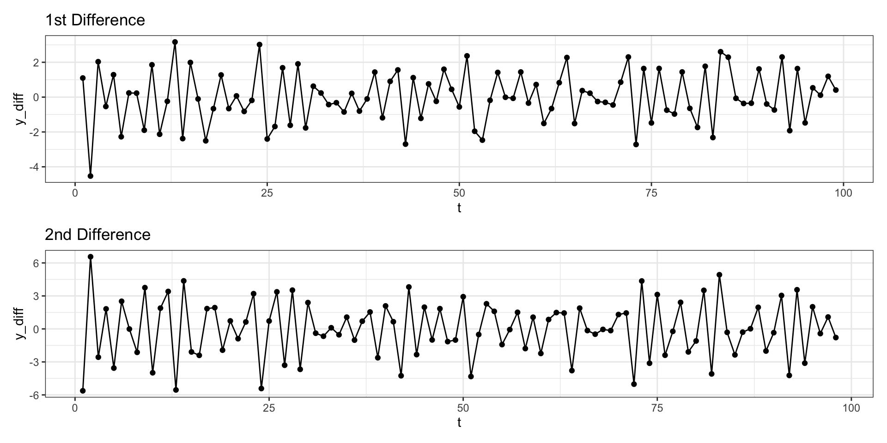Differencing - ACF
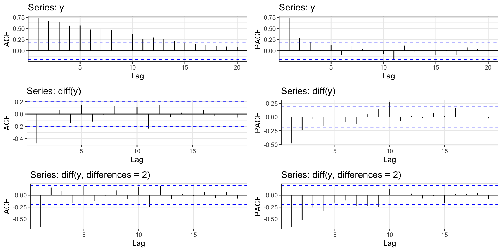AR Models
AR(1)
Last time we mentioned a random walk with trend process where \(y_t = \delta + y_{t-1} + w_t\).
The AR(1) process is a generalization of this where we include a coefficient in front of the \(y_{t-1}\) term.
\[AR(1): \quad y_t = \delta + \phi \, y_{t-1} + w_t \] \[ w_t \sim N(0, \sigma^2_w) \]
AR(1) - Positive \(\phi\)
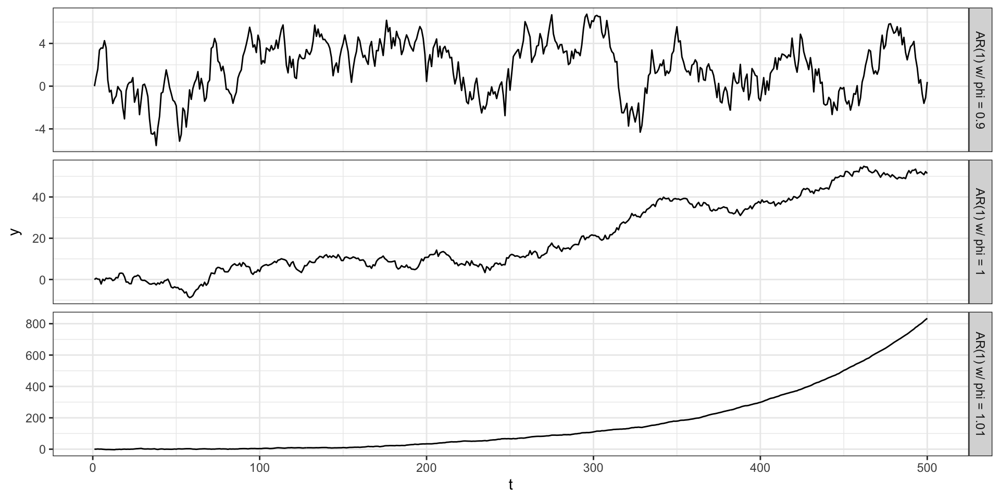AR(1) - Negative \(\phi\)
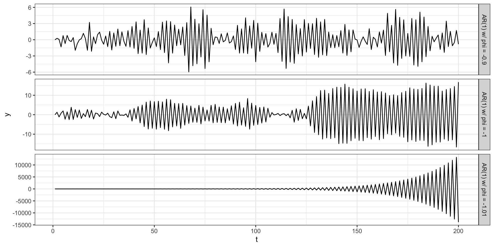Stationarity of \(AR(1)\) processes
Lets rewrite the AR(1) without any autoregressive terms
Stationarity of \(AR(1)\) processes
Under what conditions will an AR(1) process be stationary?
Properties of a stationary \(AR(1)\) process
Identifying AR(1) Processes
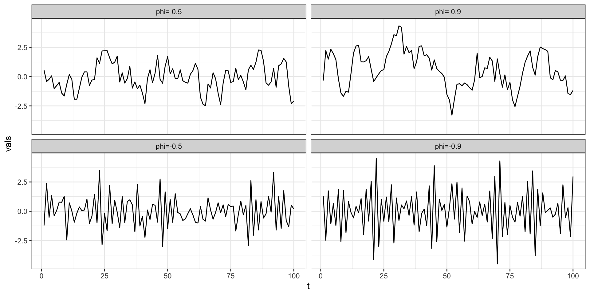Identifying AR(1) Processes - ACFs
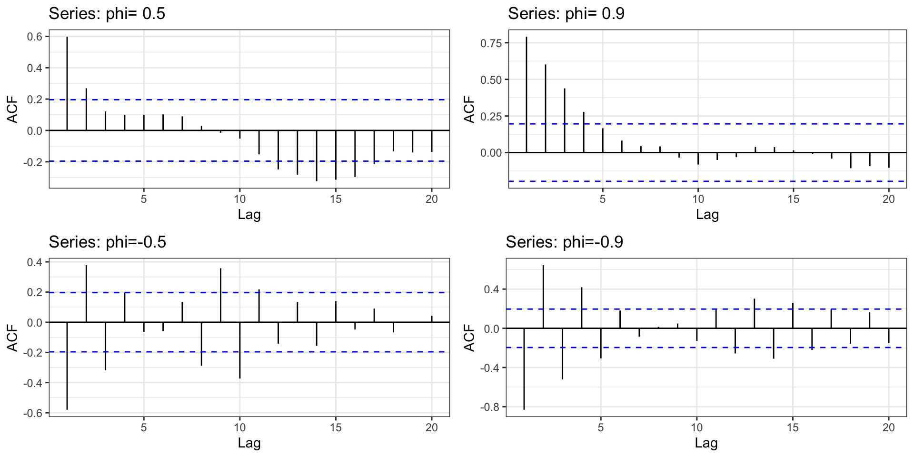Identifying AR(1) Processes - PACFs
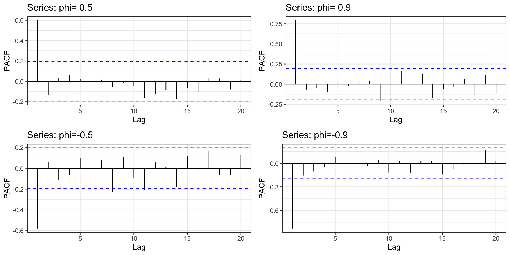Sta 344 - Fall 2022